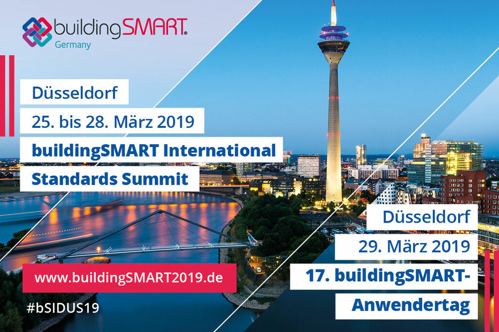
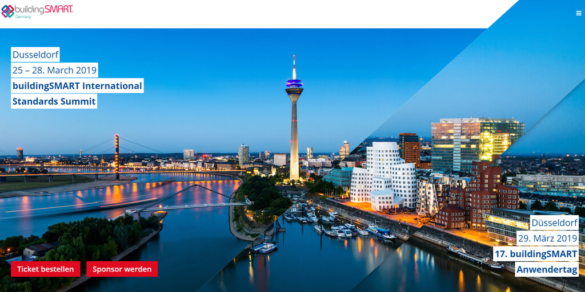
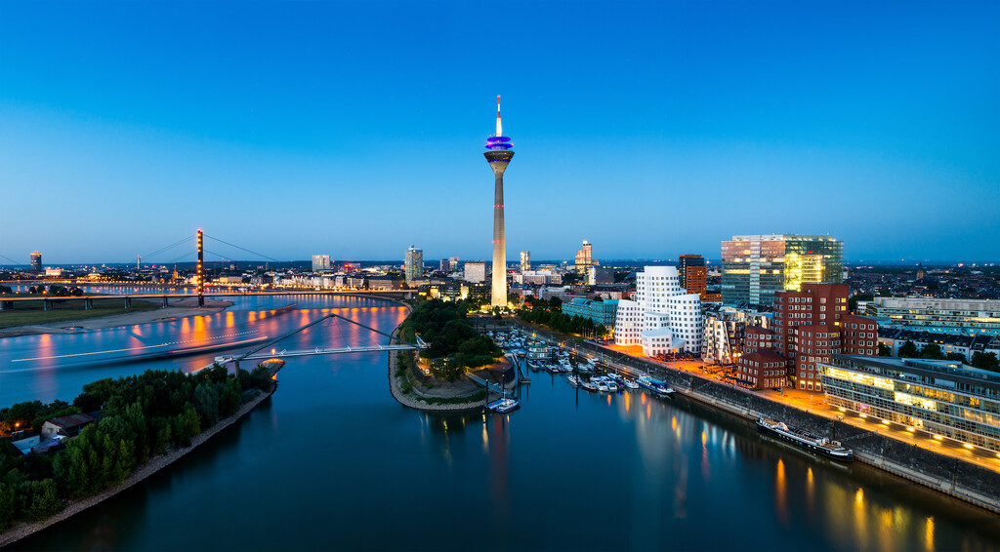

News
-1-1024x722.jpg)
Eine Woche vor dem Event: Jetzt unsere 56-seitige Begleitbroschüre zur großen buildingSMART-Woche downloaden!
Besonders freuen wir uns, dass beide für den Bau verantwortlichen Bundesminister Beiträge für das Programmheft geschrieben haben. Horst Seehofer, Bundesminister des Inneren, für Bau und Heimat und Andreas Scheuer, Bundesminister für Verkehr und digitale Infrastruktur, betonen unisono die Bedeutung von offenen Standards für das digitale Planen und Bauen. Im Programmheft finden sich alle Programme des buildingSMART International Standards Summit, insbesondere die vollgepackten Agenden für den Eröffnungstag und den Schlusstag sowie die Porträts unserer Referenten.
Alle Plätze beim Welcome Dinner ausgebucht!
Beim traditionellen buildingSMART International Welcome Dinner am Montagabend, 25. März 2019, in der "Rheinterrasse" am Düsseldorfer Rheinufer erwarten wir 360 Gäste aus über 30 Ländern. Der Abend beginnt mit einem Welcome Drink ab 18:00 Uhr. Im Anschluss daran findet die Dinner-Speech der nordrhein-westfälischen Bauministerin Ina Scharrenbach statt. Nach dem Abendessen wird Richard Petrie, Geschäftsführer von buildingSMART International, weitere buildingSMART Fellows auszeichnen. Es tut uns leid: Alle verfügbaren Plätze sind jetzt ausgebucht! ... Sichern Sie sich jetzt noch eines der letzten Tickets für Eröffnungsplenum, internationale Arbeitstreffen, "BIM at its Best" und Abschlussplenum. Auch für den 17. buildingSMART-Anwendertag am 29. März gibt es noch einige Tickets.
Die besten Lokale zum Ausgehen in Düsseldorf
Unsere Vorschläge für das Genießen eines Feierabend-Drinks und Essens sowie zum Ausgehen:
Bars and Pubs
Ausgehen
Die besten Restaurants
Bars and Pubs
Ausgehen
Die besten Restaurants

17. buildingSMART-Anwendertag auch von der Ingenieurkammer-Bau NRW als Fortbildung anerkannt!
Der 17. buildingSMART-Anwendertag ist als Fortbildung für Mitglieder der Ingenieurkammer Bau Nordrhein-Westfalen mit 6 Unterrichtsstunden anerkannt.
Für eine entsprechende Teilnahmebescheinigung wenden sich die Teilnehmer bitte an unsere Geschäftsstelle. Die AK NRW ist einer unserer zahlreichen Ideellen Unterstützer der großen buildingSMART-Woche in der "BIM-Welthauptstadt" Düsseldorf.
www.buildingsmart2019.de/de/programm-anwendertag.html
Für eine entsprechende Teilnahmebescheinigung wenden sich die Teilnehmer bitte an unsere Geschäftsstelle. Die AK NRW ist einer unserer zahlreichen Ideellen Unterstützer der großen buildingSMART-Woche in der "BIM-Welthauptstadt" Düsseldorf.
www.buildingsmart2019.de/de/programm-anwendertag.html
In zwei Wochen beginnt der buildingSMART International Standards Summit in Düsseldorf!
Jetzt liegt das vollständige 6-seitige Programm als PDF zum Download bereit. ... Bis bald in Düsseldorf!
#bSIDUS19
#bSIDUS19
Anerkennung des buildingSMART-Anwendertages als Fortbildung durch die Architektenkammer NRW!
Der 17. buildingSMART-Anwendertag ist als Fortbildung für Mitglieder der Architektenkammer Nordrhein-Westfalen in den Fachrichtungen Architektur, Innenarchitektur, Landschaftsarchitektur und Stadtplanung mit 4 Unterrichtsstunden anerkannt. Für eine entsprechende Teilnahmebescheinigung wenden sich die Teilnehmer bitte an unsere Geschäftsstelle. Die AK NRW ist einer unserer zahlreichen Ideellen Unterstützer der großen buildingSMART-Woche in der "BIM-Welthauptstadt" Düsseldorf. www.buildingsmart2019.de/de/programm-anwendertag.html
Das Internationale Rahmenprogramm "BIM at its Best" beim #bSIDUS19 ist veröffentlicht!
Das Internationale Rahmenprogramm "BIM at its Best" beim #bSIDUS19 ist veröffentlicht! Am Dienstag und Mittwoch dieser Woche, während die Technik-Experten in Arbeitsgruppen tagen, bieten wir für Anwender, Studenten und Entscheider aus Unternehmen, Politik und Verwaltung ein internationales Rahmenprogramm, das einen breiten Überblick über #BIM-Praxisprojekte bietet. Ein Tagesticket kostet 30 €. https://www.buildingsmart.de
Erste Vorträge für das Rahmenprogramm "BIM at its Best" in Düsseldorf sind nun bestätigt!
Erste Vorträge für das Rahmenprogramm "BIM at its Best" in Düsseldorf sind nun bestätigt! Dank unserer Sponsoren können innerhalb der beiden Programmtage Dienstag, 26. März und Mittwoch, 27. März, praxiserfahrene und renommierte Redner präsentiert werden. Weitere Informationen zum Programm gibt es unter: www.buildingsmart2019.de/de/program.html
Wuerth%20(002)-1024x574.jpg)
Keynote bestätigt: "Vom Schraubenhändler zum Systemanbieter"
Zur Eröffnung des 17. buildingSMART-Anwendertags am 29. März 2019 in Düsseldorf wird Dr.-Ing. Matthias Bruhnke, BIM-Beauftragter bei Würth, zeigen, welche Chancen die Digitalisierung und der Modell-basierte Informationsaustausch für einen großen Zulieferer bedeuten. Die Adolf Würth GmbH & Co. KG ist Spezialist im Handel mit Montage- und Befestigungsmaterial und sieht ihr zukünftiges Geschäftsmodell nicht mehr nur in der Produktion von C-Teilen, sondern in der Bereitstellung kompletter Systemlösungen. ... Tickets und alle weiteren Informationen auf: www.buildingsmart2019.de/de/ticketing.html
Der 17. buildingSMART-Anwendertag bedeutet den Abschluss einer ganzen internationalen Woche rund um BIM und die Standardisierungsarbeit von buildingSMART. Weitere Keynotes erwarten wir von Andy Verone, Global Vice President Oracle ("Zukunft der Cloud Technologie"), Matthias Rebellius, CEO Siemens Building Technologies ("Digital Twins - Gebäude"), Mark Enzer, CTO Mott McDonald ("Digital Twins - Infrastruktur") und Dr. Carsten Lotz, Partner McKinsey & Company ("Brancheneinblicke zum Stand der Digitalisierung").The 17th buildingSMART User Day marks the end of a whole international BIM week and the standardization work of buildingSMART. Further keynotes are expected from Andy Verone, Global Vice President Oracle ("Future of Cloud Technology"), Matthias Rebellius, CEO Siemens Building Technologies ("Digital Twins - Gebäude"), Mark Enzer, CTO Mott McDonald ("Digital Twins - Infrastruktur") and Dr. Carsten Lotz, Partner McKinsey & Company ("Industry Insights on the State of Digitalization").
Der 17. buildingSMART-Anwendertag bedeutet den Abschluss einer ganzen internationalen Woche rund um BIM und die Standardisierungsarbeit von buildingSMART. Weitere Keynotes erwarten wir von Andy Verone, Global Vice President Oracle ("Zukunft der Cloud Technologie"), Matthias Rebellius, CEO Siemens Building Technologies ("Digital Twins - Gebäude"), Mark Enzer, CTO Mott McDonald ("Digital Twins - Infrastruktur") und Dr. Carsten Lotz, Partner McKinsey & Company ("Brancheneinblicke zum Stand der Digitalisierung").The 17th buildingSMART User Day marks the end of a whole international BIM week and the standardization work of buildingSMART. Further keynotes are expected from Andy Verone, Global Vice President Oracle ("Future of Cloud Technology"), Matthias Rebellius, CEO Siemens Building Technologies ("Digital Twins - Gebäude"), Mark Enzer, CTO Mott McDonald ("Digital Twins - Infrastruktur") and Dr. Carsten Lotz, Partner McKinsey & Company ("Industry Insights on the State of Digitalization").

Viele weitere Programmdetails der internationalen Arbeitsgruppentreffen von buildingSMART International bestätigt!
Viele weitere Programmdetails der internationalen Arbeitsgruppentreffen von buildingSMART International am Dienstag und Mittwoch, 26. und 27. März 2019 im Hilton Düsseldorf wurden bestätigt! ... Unter anderem wird es eine erste Sitzung der Arbeitsgruppe "International Use Case Management" geben und auch der "Airport Room" hat seine Sitzungen bestätigt.
www.buildingsmart2019.de/de/program.html
Die Sitzungen der Arbeitsgruppen stehen allen interessierten Parteien offen. Eine Tageskarte kostet 150 €, eine Zwei-Tageskarte 270 €.
www.buildingsmart2019.de/de/program.html
Die Sitzungen der Arbeitsgruppen stehen allen interessierten Parteien offen. Eine Tageskarte kostet 150 €, eine Zwei-Tageskarte 270 €.

Unsere Location für den buildingSMART International Standards Summit
Für die verschiedenen Treffen der buildingSMART International Community und aller Arbeitsgruppen während des buildingSMART International Standards Summit vom 25. März bis 28. März 2019 haben wir das gesamte Hilton Hotel in Düsseldorf gebucht.
Jetzt Tickets bestellen!
Verpassen Sie nicht das BIM-Event des Jahres in Düsseldorf! Tickets zu allen Bereichen der buildingSMART-Woche vom 25. bis 29. März 2019 erhalten Sie über unseren Online-Ticketing. Sie erhalten sowohl Karten zu einzelnen Tagen und Elementen wie auch für beliebige Kombinationen. Beachten Sie, dass Ihr Rabatt umso größer wird, je mehr Module Sie buchen. Bestellen Sie beispielsweise Tickets für den Eröffnungstag des buildingSMART International Standards Summit (Montag, 25. März 2019), das Welcome Dinner am gleichen Tag und für den Anwendertag (Freitag, 29. März 2019), so erhalten Sie 15 Prozent Rabatt. Buchen Sie noch ein weiters Modul hinzu, etwa den Abendempfang am Donnerstag, so erhöht sich der Rabatt auf 20 Prozent.

Unsere Keynote-Speaker
Die Liste unserer Keynote-Redner für den Eröffnungstag des buildingSMART International Standards Summit am 25. März 2019 ist vollständig!
Wir freuen uns über Beiträge von Andy Verone, Global Vice President Oracle ("The Future of Cloud Technology"), Matthias Rebellius, CEO Siemens Building Technologies ("The Digital Twin - Buildings"), Mark Enzer, CTO Mott McDonald ("The Digital Twin - Infrastructure") and Dr. Carsten Lotz, Partner McKinsey & Company ("Industry Insights on the State of Digitalization").
Tickets für den Eröffnungstag und für das Welcome Dinner in the "Rheinterrasse" am Montag gibt es schon für 297 € - natürlich können auch Tickets für alle weiteren Programmteile dieser besonderen buildingSMART-Woche geordert werden.
Alle Tickets sind hier online bestellbar.
Wir freuen uns über Beiträge von Andy Verone, Global Vice President Oracle ("The Future of Cloud Technology"), Matthias Rebellius, CEO Siemens Building Technologies ("The Digital Twin - Buildings"), Mark Enzer, CTO Mott McDonald ("The Digital Twin - Infrastructure") and Dr. Carsten Lotz, Partner McKinsey & Company ("Industry Insights on the State of Digitalization").
Tickets für den Eröffnungstag und für das Welcome Dinner in the "Rheinterrasse" am Montag gibt es schon für 297 € - natürlich können auch Tickets für alle weiteren Programmteile dieser besonderen buildingSMART-Woche geordert werden.
Alle Tickets sind hier online bestellbar.
Produktdaten in der digitalen Wertschöpfungskette
Weitere Programmdetails des Schlusstages des buildingSMART International Standards Summit sind bestätigt: Wir erwarten für das Panel "Produktdaten in der digitalen Wertschöpfungskette" Beiträge von Barbara-Maria Loth (CDO Knauf Gruppe), Dirk Schaper (CEO ProMaterial) und Konrad Werning (CEO ARGE Neue Medien).
Das vollständige Programm für die große buildingSMART-Woche Ende März 2019 finden Sie hier.
Das vollständige Programm für die große buildingSMART-Woche Ende März 2019 finden Sie hier.
Erste Vorträge für 17. buildingSMART- Anwendertag bestätigt!
Am 29. März 2019 dürfen unsere Teilnehmer im Hilton Düsseldorf in vier parallelen Sektionen über dreißig Vorträge in ganz unterschiedlichen Themen-Panels erwarten. Dabei geht es neben Erfahrungsaustausch zu technischen Fragen rund um das digitale Planen, Bauen und Betreiben auch um Rahmenbedingungen wie Recht, Changemanagement oder Weiterbildung. Mit dabei sind u. a. Wayss & Freytag Ingenieurbau, AEC3 Deutschland, Vollack Gruppe, Bau- und Liegenschaftsbetrieb NRW, Vrame Consult, DEUBIM, KNH Rechtsanwälte, Astoc Architects and Planners, DT BAU - BIM-Beratung, Hochschule Osnabrück, Scape Landschaftsarchitekten, DiConneX, Wideburg Solutions, Kruse Architekten, Polydepartment, Hochschule Erfurt.
Tickets für den Anwendertag - und für alle anderen Programmpunkte unserer buildingSMART-Woche in der BIM-Welthauptstadt Dusseldorf - gibt es hier.
Tickets für den Anwendertag - und für alle anderen Programmpunkte unserer buildingSMART-Woche in der BIM-Welthauptstadt Dusseldorf - gibt es hier.
Law@BIM - Arbeitsgruppensitzung auf dem bSI Standards Summit
Law@BIM - Arbeitsgruppensitzung auf dem bSI Standards Summit am 26. März 2019 von 09:00 bis 13:00 Uhr im Hilton Düsseldorf. Bitte beachten Sie: Die Teilnahme ist kostenlos, der Zugang ist jedoch nur mit einer gültigen Tageskarte für den bSI Standards Summit für diesen Tag (z.B. Dienstag, 26. März 2019) möglich. Wenn Sie Ihr Interesse an diesem Treffen anmelden möchten, senden Sie bitte eine Mail an FG-Recht@buildingSMART.de (Betreff: Law@BIM).

Drei bSI Roundtables in Düsseldorf
Auf dem kommenden buildingSMART International Standards Summit 2019 in Düsseldorf wird buildingSMART International drei internationale Roundtables zu aktuellen Technologiethemen veranstalten:"Digital Twin" (Moderation: Wolfgang Hass, Siemens Building Technologies),"BIM- und GIS-Integration" (Gastgeber: Geoff Zeiss, OGC-Direktor) und"Open Source Common Data Environment" (Host: Frank Weiss, Oracle).Ziel der Roundtables ist es, die Notwendigkeit der Entwicklung offener Standards gemeinsam mit führenden Köpfen der beteiligten Disziplinen zu diskutieren und sich über weitere Maßnahmen unter dem Dach von buildingSMART International zu einigen.Die Roundtables finden am Dienstag, 26. März 2019 im Hilton Düsseldorf statt. Sind Sie an einer Teilnahme interessiert?Die Teilnahme ist kostenlos, der Zugang ist jedoch nur mit einer gültigen Tageskarte für den bSI Standards Summit noch am selben Tag möglich. Wenn Sie Ihr Interesse an einem dieser Roundtables anmelden möchten, senden Sie bitte eine E-Mail an: communications@buildingsmart.org
Jetzt noch Early-Bird-Tickets sichern!Save your Early Bird Ticket for the buildingSMART International Standards Summit!
Jetzt noch Early-Bird-Tickets für den buildingSMART International Standards Summit und 17. buildingSMART-Anwendertag von buildingSMART Deutschland sichern! ... Vom 25. bis 29. März 2019 ist das Hilton Düsseldorf das deutsche BIM-Zentrum für Keynotes, Diskussionsrunden, viele Arbeitstreffen rund um die Standards und Services von buildingSMART, internationale und deutsche Praxisberichte und nicht zuletzt zwei Abendveranstaltungen mit der internationalen und deutschen BIM-Community.
Unsere Sponsoren
.jpg)

.jpg)